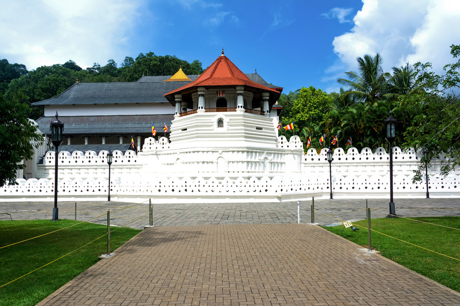
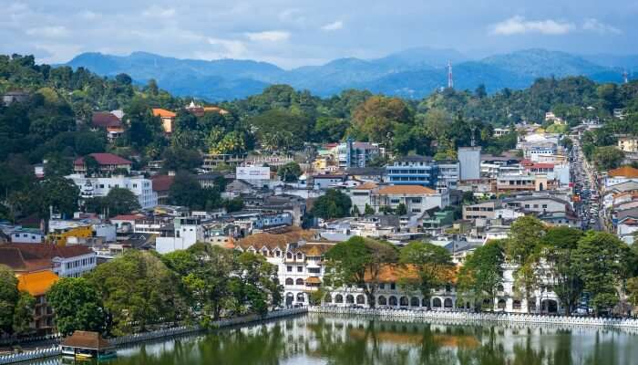
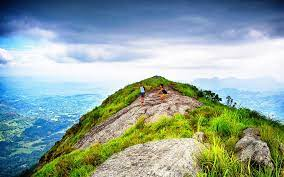
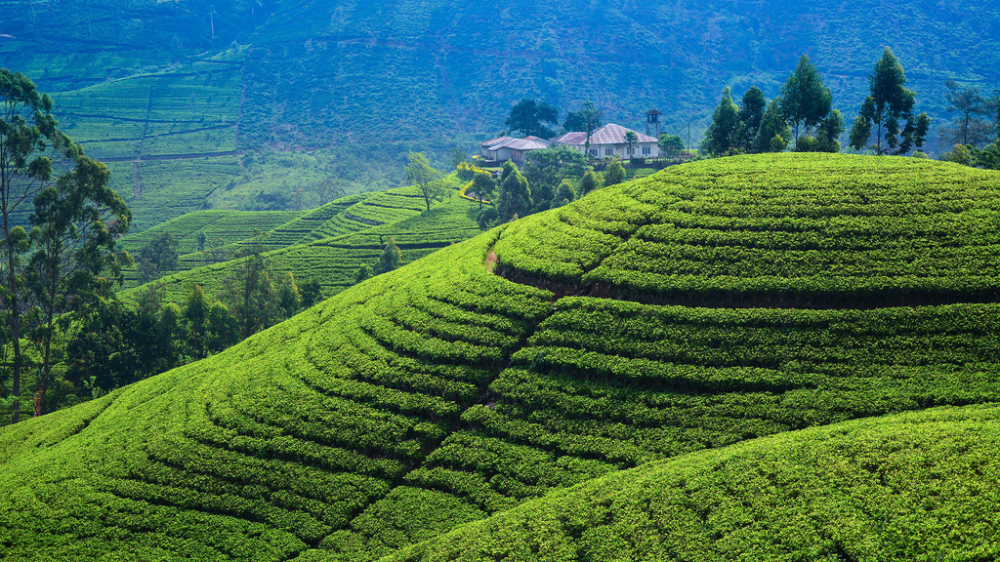

TEMPLE OF TOOTH
Considered as one of the most important temples of Buddhists in Sri Lanka, the Temple of Tooth Relic is located to the north of Kandy Lake and is one of the most remarkable places to visit in Kandy Sri Lanka. The sacred tooth of Lord Buddha enshrined in the temple makes it one of the popular Kandy tourist places. The room housing the tooth is open to devotees to offer their prayers. However, nobody gets to see the tooth because it is kept in a golden casket inside a stupa-like structure.
KANDY VIEW PROT
Kandy is the heart of Sri Lanka and watching the gorgeous hill station from a height is not something everyone gets to witness, so don’t miss out on exploring the most beautiful places to visit in Kandy on your vacay. The viewpoint is located at a distance of 1.7 km from the city centre and the route to the viewpoint is equally mesmerizing. Carry your camera along for some instagrammable pictures at this point which is one of the best places to visit in Kandy.
HIKER'S PARADISE
One of the most beautiful places in Kandy, Hanthana Mountain Range is every nature lover’s paradise. The mountain ranges are located on the outskirts of Kandy city and appeal to tourists as an amazing picnic and hiking spot. One can even enjoy the exhilarating views of the city from top. Declared as environmentally protected areas, the range consists of seven peaks, Uuara Kanda being the highest one. This is also one of the best visiting places in Kandy.
GIRAGAMA TEA PLANTATIONS
Tea plantations are the common things about Sri Lanka. Kandy is no less when it comes to tea plantations and one of the best places to visit in Kandy is Giragama tea plantations. Giragaram is a pretty little town in Kandy that is known for its tea plantations. It offers the much needed peace and tranquility along with picturesque views that will leave your soul stirred. There are estates wherein you can walk and soak the views.
Discover destinations, find outdoor adventures, follow the journeys of our travel writers around the world, and be inspired.